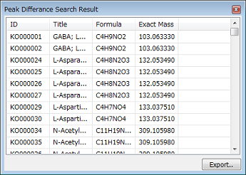

You can search the MassBank database to find spectra which contain specific peak differences.
Select [Tools] in the menu bar and then select [MassBank] > [Peak Difference Search] from the drop down menu.
The MassBank Peak Difference Search dialog appears.
Edit the values for [m/z Difference], [Relative Intensity], [Tolerance], [Ion Mode] and [Max Number of Results]. Click [Instruments] to edit the instrument list.

Click [Search].
It might take several seconds to search the database. After that, the MassBank Peak Difference Search Results pane (Refer to the section called ÅgSearch ResultsÅh) containing the hit spectra is displayed.
